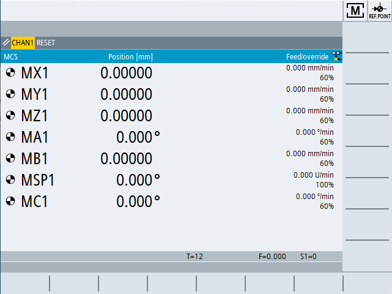

Startup
When the control starts up, the main screen opens according to the operating mode specified by the machine manufacturer. This is usually the main screen for the "REF POINT" function.
| | Machine manufacturer Please observe the information provided by the machine manufacturer. |